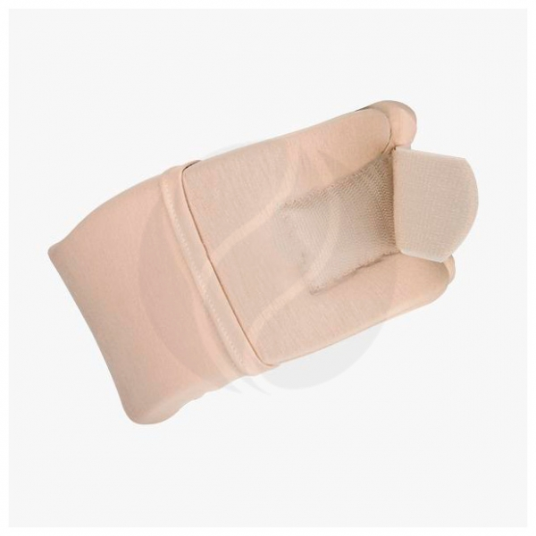
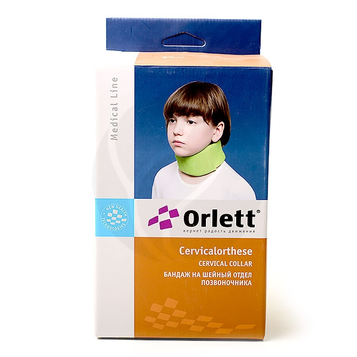

Бандажи для головы и шеи
| Названия |
Состав |
Цена |
Внешний вид |
| 449 |
Основа: пенополиуретан
Основной чехол:хлопок — 92%, лайкра — 8%
Дополнительный съемный чехол: хлопок — 92%, лайкра — 8%
|
Trives бандаж на шейный отдел позвоночника Т.51.91 Evolution (р.8.1(8-36см)), бежевый, №1 |
 |
| 590 |
57% пенополиуретан, 4% эластан, 35% вискоза, 4% полиамид
|
Orlett бандаж на шейный отдел позвоночника для детей старше 1 года БН6-53 (высота 7см), зеленый |
 |
| 657 |
Пенополиуретан, хлопок, лайкра
|
ORTO | NIK корсет ортопедический для шейного отдела ШВ-511 (р.15 (10*53см), бежевый, №1 |
 |